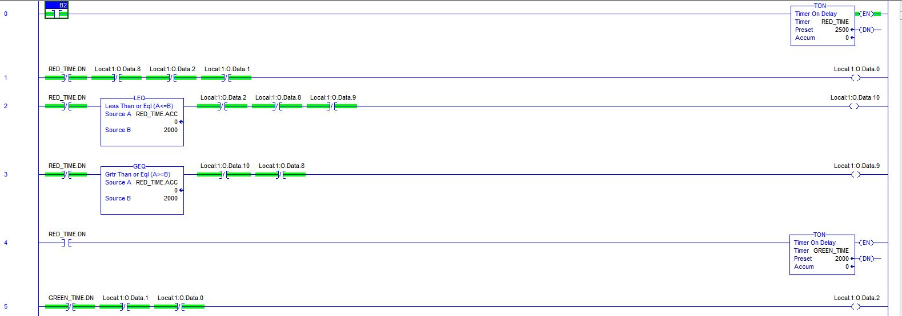

The goal of this project is:
Part 1: To design and build a PLC
system utilizing using radio
communication.
Part 2: Explore the vulnerability of the
radio communication through using a
Software Defined Radio.

Full Setup
The I/O that we will use to display the traffic light system is the ladder
program and an array of LEDs to mimic the plan of a 4-way intersection.
The I/O of our motion detector will be the PIR to a digital module then to an
LED.
The system in comparison to real world traffic stops. Ethernet facilitates
communication between the devices

Traffic Setup

PLC Wiring Schematic

Traffic Light Wiring Schematic

Testing Ethernet communication with the PLC setup for remote Programming
The program uses timers that has one light on at a time.
The system goes on continually because there is a reset
before the end of the program.
For this setup, only inputs, outputs, timer and
binary data are used for programming the PLC.